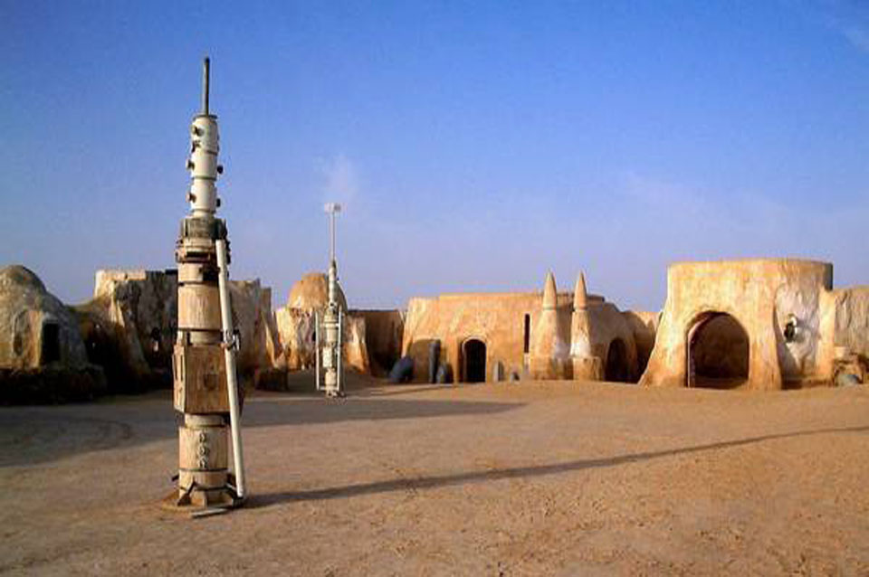
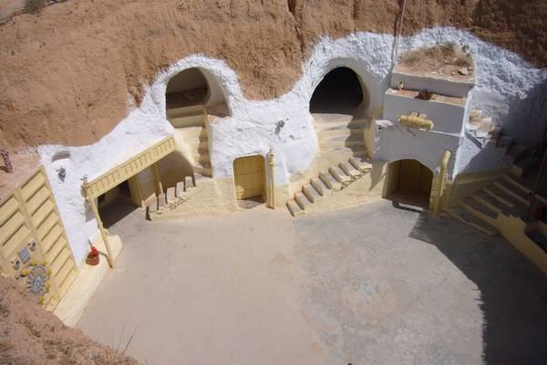

Star Wars Tours in Tunisia

Star Wars fans may be more familiar with the planet Tatooine than the country of Tunisia -- but they are one and the same. Five out of the six Star Wars movies were partially filmed in southern Tunisia and the joyous thing is that many of the sets are still nicely preserved. You can stay in Luke Skywalker's home (now a hotel) and wander around the desert bumping into robots and other Star Wars paraphernalia around Mos Espa.

Spend the Night in Luke Skywalker's Home
Remember how Luke's home was a series of underground caves on the planet Tatooine? Well, George Lucas used an existing troglodyte home in Matmata to film those scenes. The cave dwelling is now a hotel Hotel Sidi Driss (see photo) and you can stay there for just $12 a night. Props from the movie can be found throughout the hotel and you'll no doubt meet Star Wars fans from all over the world in the bar. Nearby is the Dune Sea where R2-D2 and C-3PO crashed in Episode IV.

Sleep on a Tatooine Moon
For a real "non-tourist" but Star Wars related adventure, you can rent a simple room in Guermessa, an abandoned Berber hill top village. The views are incredible and you'll have the entire place to yourself. Guermessa is the name of one of the Planet Tatooine's three moons. The other two moons were also named after real places: Chenini (the site of a spectacular mosque in real life), and Ghomrassen